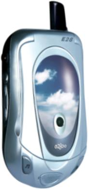
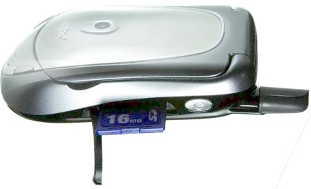
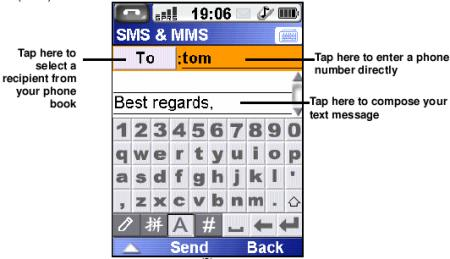

|
|
| CEO Interview: Roger Kung of E28 |
(Aug. 27, 2004)
LinuxDevices presents this exclusive interview with Roger Kung, Chairman and CEO of E28, a Linux smartphone startup in Shanghai, China. E28 was the first company to ship a Linux smartphone, and could unveil a Linux smartphone for the US as early as the Boston LinuxWorld Expo.
Roger Kung is well-known in the mobile phone industry, having served as President of Motorola's Asia operation, which he grew from annual sales of $200 million to $4 billion. Kung strongly advocated Linux smartphones at Motorola, and he retired from Motorola in 2002 to found E28, a company entirely focused on Linux smartphones.
The interview also includes E28 CTO Nathan Wang (pictured at right), and Loi McLoughlin, CEO of E28's US distribution partner, SeaQuad.
Enjoy . . . !
Q1. Can you share some general background on E28, its vision, and why it chose Linux to power its smartphones?
A1. Roger: The company was founded in October of 2002 with the vision that the industry will quickly move from fashion and feature phones to smartphones. Also, we believe strongly that content and smartphones need to closely tie together in order to move the industry further.
When E28 was founded, we wanted to build two very important platforms: a mobile content platform and a smartphone platform for 2.5G and 3G. It's our strong belief that, in the future, if a company only focuses on phones, without a focus on content and a phone-related ecosystem, they will fail. The industry is moving from voice to data, and it is the total ecosystem that counts, instead of only just the phone.
That's why when E28 defines products, we don't do so in the traditional industry way, which is very much hardware feature oriented. We won't be searching for a one-megapixel camera, or a certain level of color display. Rather, E28 is defined as a mobile communication experience. That's what we're looking for.
We think the voice-related communication experience has saturated, and in the future, the only way to differentiate who's the winner and who's the loser is going to be the multimedia-related communication experience. That's related to the whole industry spectrum, from operator, third-party developer, and operating system to device builder and chipset. The only way to advance the mobile and communication industry is to improve the multimedia communication experience.
When we define our product, we start at a very high level. We don't say, "Everybody's talking about one-megapixel cameras, so lets just cram that hardware feature into a device . . ." That approach makes a device very difficult to use.
Q2. Can you talk about your specific product strategy, and why you chose Linux?
A2. Roger: We segment the smartphone into four categories. The first one is the multimedia smartphone. The second is entertainment. The third is productivity. The fourth is communications.
We are basing our development on how to enhance the human communication experience. In the space of the multimedia experience, in the space of the entertainment experience, and also in the space of the productivity experience.
Now, we're coming to why Linux is so important to us. When we were forming this company, we came up with a very comprehensive study, and choosing Linux was not an accident. Let me just talk about five or six points why E28 chose Linux.
Number one, Linux is a non-proprietary, standards-based open systems software. So the rate of innovation is faster and broader.
Second, Linux can be customized for embedded systems, which is very different than people trying to use a Windows based OS and trying to cut it down for embedded systems -- that carries over a lot of handicaps from larger computer systems.
The third one is that Linux is flexible enough for product customization and differentiation. If you look at [Windows Mobile Smartphones], they all have the same user interface, the same display, the same look . . . One of the key successful formulas to win in a consumer market space is through product customization and differentiation.
Number four, we think Linux for sure offers a lower total cost compared to the other competing operating systems for mobile applications.
The fifth one is that Linux offers broader hardware and software support.
The last one is that because of the way the Linux operating system works, it offers superior security and system level protection. Now, even Symbian is starting to have viruses show up in phones. We think Linux offers superior security due to its design, how it uses memory, and where a user locks into the system.
Q3. Can you describe the products E28 has shipped so far, and your product roadmap? Will you continue to use Linux?
A3. Roger: Our first product, the e2800 [pictured at right, story], was introduced in September of 2003. That was the world's first Linux-based smartphone. Linux allowed us to optimize our user interface to be very easy to use. It allowed us to come up with a unique identity, and a very nice-looking phone.
Currently, we find no limitations for Linux as an operating system for smartphones. The e2800 is very high-performance, and every user is surprised with the response when they tap the touchscreen, or jump from one application to another.
Our second product, which was launched last month [story], is the e2800+. We believe it is the most easy-to-use productivity smartphone. It has a lot of upgrades, compared with the e2800, such as video. The video system can do recording and playback for more than 10 hours, depending on the capacity of SD card you are using. Also, the mp3 player can play continuously for up to eight hours without recharging your battery.

The e2800+ supports SD memory cards up to 1GB
The e2800 and e2800+ are dual-band phones, so they are not for the US market. Our third product has the internal codename Venus, and will be called the e2808. It will have both tri-band and quad-band versions. This is for the worldwide market, including the US market.
With this phone, we are aiming to produce the highest performance multimedia smartphone. When I say we see no limitation on Linux . . . we have a video demonstration on this third product, and basically the framerate can be as high as 25fps. You can watch a pre-loaded movie with this phone just like you were watching any movie.
So, other than all the good points about Linux for smartphones, most importantly, even when we build the highest performing multimedia phone, we don't see that Linux has any limitations. If we build the most easy to use productivity phone, we don't see limitations there, either. That's why our future roadmap is all Linux-based.
Q4. Do you expect Linux to become a major operating system in smartphones?
Q4. Roger: What E28 is trying to do is to promote Linux as a major operating system for mobile and embedded applications. As we announced at the San Francisco LinuxWorld, E28 wants to be the major mover for the Linux Mobile Alliance, with the intent to boost embedded Linux as a major smartphone operating system.
We currently believe Linux is the best choice for an embedded system, particularly for smartphone applications. Our belief is that with Nokia taking a majority ownership of the company of Symbian, that basically kicks out Symbian as a popular operating system for mobile phone applications. It's only Linux and Windows left on the major battleground. It is E28's goal to do everything possible to make Linux a major operating system for embedded applications.
Q5. How many employees does E28 have, and where are its offices?
A5. Roger: Currently we have 170 people. We have offices in three locations. Shanghai China is our headquarters and also major R&D center, where we have about 140 people. Hong Kong, China, where we have 30 people, is our R&D center and also our sales and distribution and service office for the Taiwan and Southeast Asia Market. SeaQuad is our partner for the North American market. These are the three major offices.
When we think about strategy, we would like to be a global player, even though we started in China and we will for sure cultivate the China market. But we have already marketed our first product in Hong Kong, and also Singapore. Our second product will expand from this territory into Taiwan, Malaysia, Indonesia, and also the rest of Southeast Asia. Our third product is fully intended for the US and European markets.
We would like to make our third product the highest-performance multimedia smartphone, meaning it has the longest video recording and playback time than any other phone on the market. It will have the best video quality -- and the best audio quality -- this phone will have dual speakers and surround sound to enhance the overall multimedia effect.
We're working very closely with Loi and Dave [at SeaQuad] to launch our third product, Venus, into the US market. Our current timing is still under discussion, but according to Loi's recommendation we may announce the US product at the Boston LinuxWorld Conference [Feb. 14-17, 2005].
Q6. Can you briefly describe E28's management team?
A6. Roger: We have a very strong management team. Other than myself, we have Dr. Nathan Wang. He's an expert in computing, telecom and also Internet systems. He's our CTO. He manages all of our R&D and engineering activities.
Currently out of 170 people, close to 100 are R&D people. We do everything from scratch. We port our own Linux. We write our own software, from drivers all the way up to the application level. For hardware, we do our own industrial and mechanical design, RF layout and baseband related to our core knowledge and core competency . . . we do everything. We have a very, very solid engineering focus.
Other than these 100 R&D people, we have another 40 for quality and program management, factory ramp-up, and new product introductions with the factory. This is under Vincent Cheung. He has 15 years of quality assurance experience in Asia. He used to be Motorola's quality director for the whole Asia region. Under him, he has people to do hardware design for quality, software design for quality, software testing and FTA (Field Type Approval), and all of the factory SMT and final tests, incoming quality control . . . all that is under him.
Our third officer is Dr. Song Zhou. He's an expert in RF communication systems, and also hardware and semiconductors. Currently his responsibilities are in new business development. He also brought in a lot of experience and people with a focus on the communications area.
The last officer is Jason Chen. He's our chief marketing and sales officer, responsible for all the sales and marketing activities for E28. He used to be the general manager of Motorola's sales and marketing operations in Hong Kong, Taiwan, and the whole China market.
So we have a very complete management team, and our marketing focus is only on smartphones. We choose not to participate in today's fashion phones and feature phones, because we think the value will migrate very quickly from these areas into smartphones. So rather than spend our time on today's market, we'd rather spend our energy to create a future market in the smartphone system area.
Also, under Nathan, we have a very strong server team. We have several patents regarding OTA, over-the-air downloads, which is the linkage between servers -- which represent digital content -- to smartphones -- which represent a mobile terminal device. That's why we call it an end-to-end system. One end is the multimedia service. The other end is the smartphone terminal. E28 is focused on combining these two.
Fortunately, we have experts in both areas. Digital content is more in the computing and also the Internet area. Smart terminals are more in the communication and hardware area.
Currently, under R&D, engineering, plus quality and factory engineers, we have close to 130 strong people. On average, they have more than five years design and development and product engineering experience in digital content and in smartphones, for both GSM and CDMA for global markets.
Q7. Can you describe your product roadmap going forward?
A7. Roger: Currently, we are working on four different platforms. The first platform we call our high-tier platform. It is an ADI-based platform, and has given us two products, the e2800 and e2800+.
The next platform, we call the high-performance platform. It is aiming for the multimedia and entertainment market. On this platform, we plan to build at least three products. The Venus phone that I mentioned is the first. We are also working on the next one, which we call Hermes. It is a more productivity- and entertainment-focused product.
The third platform, we call the high-density platform. It uses a different chipset. Due to its high density and overall lower cost, we will use that platform in productivity- and also communication-related applications.
Finally, we will move on into 2.75G "Edge" products toward the fourth quarter of 2005. Then, we will move into 3G UMTS in the middle of 2006.
Q8. What tasks are E28's R&D and engineering teams most focused on?
A8. Roger: We are developing three different engines. The first, we call the content engine, which is the server. It represents mobile content and digital content integration.
The other two engines we call the computing engine and the communication engine. These two reside inside the smartphone.
The computing engine has a data interface to the content engine, which has given us all the applications, like SMS, MMS, a browser, email -- all that.
The communication engine also has a human interface -- basically how the human uses the smartphone. It's represented by the industrial design, the mechanical design inside the phone, the media design, and the user interface, accessories, and packaging, and also our company website.
Our company is focusing on end-to-end development, and focusing on three different technology engines.
Q9. Can you describe the Linux Mobile Alliance, what it will do, and why you wish to drive it?
A9. Loi: With Linux, all the pieces are there, but they're disjointed. Linux Mobile Alliance's goal is to pull all the pieces together, so we can have the same united front. We think Linux is the only alternative to Microsoft, and may even be stronger in the long run. Because of its flexibility and because it's open, innovation will come much more rapidly.
Nathan: The Linux Mobile Alliance is specifically to support things that will make sure that we have mobility. This means making sure that needed applications can be ported to a mobile environment. Mobile phones have already reached over a billion users. It's going to be very important to access the content on the desktop, and on the server. As Roger said, the whole ecosystem needs to work together to have the same total solution that Microsoft is trying to sell to people.
Q10. What about application software? Will there be portability among Linux phones, especially through the efforts of the Linux Mobile Alliance?
A10. Roger: We will prepare the API and open the API and some libraries to the public so that developers can use these open interfaces to write applications that run on Linux phones.
Nathan: And also conversely, for the phone in North America, E28 will come out with a desktop application for data backup and management, so that people will have the ability to put photos and contacts, etc., into the phone easily. Things like that are important because the smartphone is not a standalone device anymore. It's part of a whole system. It's an extension of what's already done on the desktop. Voice is no longer the only application. We think that's one of the things we are doing differently from the rest of the people doing phones. They still look at the smartphone as a phone.
Q11. Looking at the smartphone as a handheld computer, communications device, and entertainment device, back to the question of software portability. Will you be tending to want to see applications written in managed code, such as Java, or do you think that C code will be as common?
A11. Roger: I think it will be both. Some applications will be in Java, and some will be in native code. Java has portability, and is easy to download. Native code has good performance. Whether the application should be written in Java or native code really depends on the kind of application.
Q12. When you go from one Microsoft Smartphone to another, you instantly recognize the widgets, the navigation, and the UI. In the Linux Mobile Alliance, assuming you have competing companies -- let's say even Motorola became involved -- you conceivably would have different approaches, different UIs, different widgets, so that you wouldn't have that consistency of look and feel. Do you think that's a good thing and should be that way, or are you going to try to have some consistency in UI?
A12. Nathan: From a market point of view, we think that having total consistency is not necessarily a good thing. With something like that, it changes with different cultures, right? Some cultures don't have as many computers. Some cultures don't have 500 names. So we think that for a smartphone, just like with a mobile phone, you don't need total consistency in the UI. You just need consistency in some of the ways the UI is implemented.
For example, if you look at mobile phones from several operators, there are certain ways that the phone is laid out, but it's not completely consistent -- it's not exactly identical.
We think that in the end, you want to give people the chance to keep making it simpler and simpler.
Q13. Yes, the Motorola A760 was criticized in early reviews for having the same old interface as the A388c.
A13. Nathan: Sometimes, people overkill the consistency. As long as it is good, I believe that you should continue to improve it, to make it easier and easier. And the more people trying to make it better, the better the final result will be.
Roger: We want to provide an environment so that developers can write applications and have interoperability taken care of. In terms of the final UI, we also provide a good tool that gives each customer the ability to do customization. We are also working with some major operators to define a good interface for the general public.
Nathan: The kind of standardization we'd like to see is more fundamental than just the UI. If you are a desktop Linux developer, and you are going to do a calendar application, you think, "Maybe I should put these hooks in, so it's easy to interface with my application." Right? Things like that we think are very important. And those need to be addressed first, because they're fundamental. And that's what Linux Mobile Alliance is going to try to do first: make sure that if you have an application out there that's good for the mobile environment, that we can easily port it to the device.
Q14. We've read a little bit about a kind of mysterious but deep pocketed investor that is backing E28, and we're curious if you can tell us anything about your funding source or sources?
A14. Roger: Actually, there's nothing mysterious about it. Our funding structure is very, very simple. We have one major investor, and their name is Inventec. It's a company in Taiwan. They are a global player in the PC ODM [original device manufacturer] market. Other than Inventec, the rest of the shares are all controlled by the E28 management team. So that's a very simple share structure.
Nathan: Inventec makes stuff for HP, and Compaq before that. This background brings the scale, because really, you need to be big in hardware. So E28 has knowledge scale, a background in computers, background in Linux, and a background in mobile phones. We think that's what it's going to take to really build a superior device and solution in Linux.
Q15: Inventec is also the manufacturing partner for E28, right?
A15. Roger: Not currently. We outsource our manufacturing. For the e2800, we work with Solectron in Suzhou. For the e2800+, we work with Ares, another EMS company located in Tiaenjing, China. Currently we are talking with Inventec, and they are interested in investing into manufacturing capacity for E28. But the relationship is just like Solectron and Ares. It's an EMS contract with E28.
Nathan: I'm sure you guys can read through the lines, right? I'm sure that every computer company aspires to grow the business toward another fast-growing industry. And who better to team up with than a team of experts who've done cell phones before?
Q16. We have noticed that the e2800 has gotten a lot of media attention in China, winning several awards. But we do not have a sense of how widespread it is, and how many may have sold, and what the smartphone market in general is like in China right now.
A16. Roger: We do get many awards and news coverage inside of China and also outside of China. The general comment for our product is very consistent. People basically state that once they have used our product, they really don't want to use any other phone anymore, just due to how easy and convenient it is to use the smartphone features.
We have a lot of great feedback from high-level executives. They tell us that before, they didn't know how to send SMS short messages -- they only knew how to receive them. But once they have used our phone, every day they send out 40 to 50 short messages. They are also using our "group send," which is just like sending a group email, but with a short message, or MMS, if you need to attach a picture.

The combined MMS/SMS message client supports group sends through the contact manager.
Click here for a screenshot tour of the e2800+
Virtually all our users say they don't have to read the manual to operate our phone. That tells you how easy the user interface is. To us, ease of use is key. Otherwise, you just continue to pack features in the phone, making it very difficult to use. That will frustrate the user.
In terms of our total sales, the e2800 has been on the market for about eight months, and has sold about 70,000 units, which is very good for its price point and the competitive market. Outside of China, we have sold about 8,000 units as well.
Nathan: I think if you guys take a look at the original Treo 280, when they launched, it wasn't selling in the hundreds of millions, either. First you have to educate the consumer. It takes time to get the word out.
Loi: We did a comparison between sending a group SMS from an e2800, a Palm phone, and a Microsoft-based phone, like I use, an I-600. The e2800 is five times faster.
A few months back, AT&T had to revamp its M-Life launch because of the complexity of setting it up. They realized, you know, the more steps you have to go through, the less likely you are to use something.
Q17: Are there currently other phones in China, either featurephones or smartphones, that run Linux?
A17. Roger: Yes, Motorola's A-760 is also using Linux. I'm not sure if there is any Samsung phone using Linux?
Nathan: I think they announced it [story], but those guys hedged their bet. That's one thing I mentioned before -- we want to make sure that nobody does a bad job and gives Linux a bad name. Because that's what Microsoft reps are trying to do -- they say, "Look what people put out."
Q18. Along with that then, you mention that you developed everything yourself, instead of using a package like Qtopia Phone Edition, or whatnot, and that makes me curious about whether you will license the Linux software to other manufacturers and even possibly license the hardware to ODMs.
A18. Roger: Yes. Both the Linux-based smartphone reference design, and also Linux-based application software, are available for licensing.
Nathan: You guys know, before you can do a reference design, you have to show people that it works. Even Qualcomm did phones beforehand. And then once you show that it's done well, then people want to license you. That's when you get into licensing. First we have to show that it's a good solution, and we have done that with two generations now.
Q19: What is the competitive environment like now in China on the level of the smartphone? I would think it's mostly your Linux phone, maybe Motorola's, and then maybe Microsoft's smartphone. How are they perceived. Is there a perception for example that Linux is the up-and-coming best solution for the future, in general, or is it still you pick one or you pick the other if you're a company deciding what to do?
A19. Roger: Symbian smartphones are basically provided by either Nokia or Sony/Ericsson. For Microsoft, the majority of the players are Taiwanese -- PC manufacturers that follow their PC familiary with Microsoft. They choose Microsoft's phone package because they have very limited software integration capabilities. They only do the hardware, slapping things together and rushing to market. There are also local Chinese players aiming for the lower tier smartphone market with very, very low performance solutions.
So, in short, E28 and Motorola, Sony/Ericsson, and also Nokia are aiming for the mid-tier and also the high-tier smartphone market. The local companies are getting a solution from a design house, and trying to aim it into the lower-end smartphone area.
Q20. You are no doubt familiar with the Consumer Electronics Linux Foundation (CELF), which started in Japan, and has spread a little bit in the US and Europe. How do you see the relationship of your activity with respect to the Linux Mobile Initiative, and that of CELF? They do have a sort of similar objective, except yours is more limited to smartphones.
A20. Nathan: We'll be focused on mobile applications for smartphones. Because really, we want to narrow it down to make sure we achieve that objective. To ensure that in the mobile space, we have the exact needed applications.
Roger: We are a member of CELF as well. Our VP of software architecture Michael Chu is our representative to that particular organization. So, let me have Michael update you about the status over there.
Michael: Right now the CELF, as you know, is working on Linux for embedded products. They are working with MontaVista to use the consumer electronics edition of Linux. The purpose of the Forum is to provide an embedded Linux with good power management, and also a good compact Linux OS for all sorts of different consumer products, including mp3 players, set-top boxes, and DVD players.
What the Linux Mobile Alliance is trying to do is almost like a subset within CELF, where we focus very much on the mobile applications for Linux that can go into mobile phones. For mobile phones, besides Linux itself, we need to actually connect to a modem. There are a lot of interconnections between the modem part and the Linux part. The modem part -- whether it's GSM, or CDMA, or 3G -- has all the real-time aware stuff that handles the communication stack. The purpose of the Linux Mobile Alliance is to provide a solution where the Linux OS can communicate well with the real-time OS on the communication part, so that data and voice packets can have a seamless integration into the Linux OS. As you know, Linux OS is not a real-time system. So, we have some mechanismisms where we actually multiplex and then take the time-critical portions of the communications stack away from Linux so we can handle the communication part more efficiently.
Q21. Is that DSP-controlled?
A21. Michael: Partly. Most of the current communication part is done by DSP and an ARM7 processor. We have some extensions to Linux to communicate with the real-time portion of the modem. That's an area that CELF does not address, because their focus is more on consumer products, where real-time is not a major concern. Whereas, in communications, as you know, real-time is everything. If you cannot connect to the base station you lose your call.
Q22. So at the moment there's no formal relationship between the two organizations. Certainly, Linux Mobile Alliance is very new, but conceivably they could have a close relationship in the future in which they share common needs and specialize in different areas for different types of devices. Similar to the OSDL which has a Carrier Grade working group, and Desktop working group, and so on and so forth. It seems like CELF could become the parent organization that could become the umbrella for different device groups that specialize the common things into specific areas.
A22. Michael: The Linux Mobile Alliance will review and discuss that possibility. Potentially, that could be a future direction. Because again, we don't want to separate our own proprietary OS from mainstream Linux activities.
Q23. I have a question about the high-density design mentioned earlier. Is that a single chip solution, instead of a dual-chip solution with one chip for the modem and one for the applications processor?
A23. Nathan: Right now we are using a dual-chip approach. In the future, with semiconductor support, we can put that in a single package.
Q24. Is that likely to be a multi-core processor, so that you can still segregate some of the real-time activities, some of the RF activities, separate from the application and UI?
A24. Michael: Right. It will very likely be a single component, but there will be multiple cores, yes.
Q25. Can you explain where the name "E28" came from?
A25. Roger: Our major investor is Inventec Corp., and their vice chairman is Sayling Wen. He and myself were middle school and also high school classmates for six years. The name for our class was called E28. That was back in Taiwan, when the government decided to have a special experiment with the education system, and we were chosen as a test. That's what "E" represents -- it's for "experiment" -- experiment class number 28.
Q26. I think the experiment worked! Thanks very much for your time, and good luck with your Linux smartphones, US launch, and the Linux Mobile Alliance!
Read all the interviews in our Executive Interview Series
Other Related Stories
 |
|
|
|
|
|
|
|
 Use of this site is governed by our
Terms of Use
and Privacy Policy.
Except where otherwise specified, the contents of this site are copyright © 1999-2005
Ziff Davis Publishing Holdings Inc.
All Rights Reserved. Reproduction in whole or in part without permission is prohibited. Linux is a registered trademark of Linus Torvalds. All other marks are the property of their respective owners.
Use of this site is governed by our
Terms of Use
and Privacy Policy.
Except where otherwise specified, the contents of this site are copyright © 1999-2005
Ziff Davis Publishing Holdings Inc.
All Rights Reserved. Reproduction in whole or in part without permission is prohibited. Linux is a registered trademark of Linus Torvalds. All other marks are the property of their respective owners.


 news feed
news feed